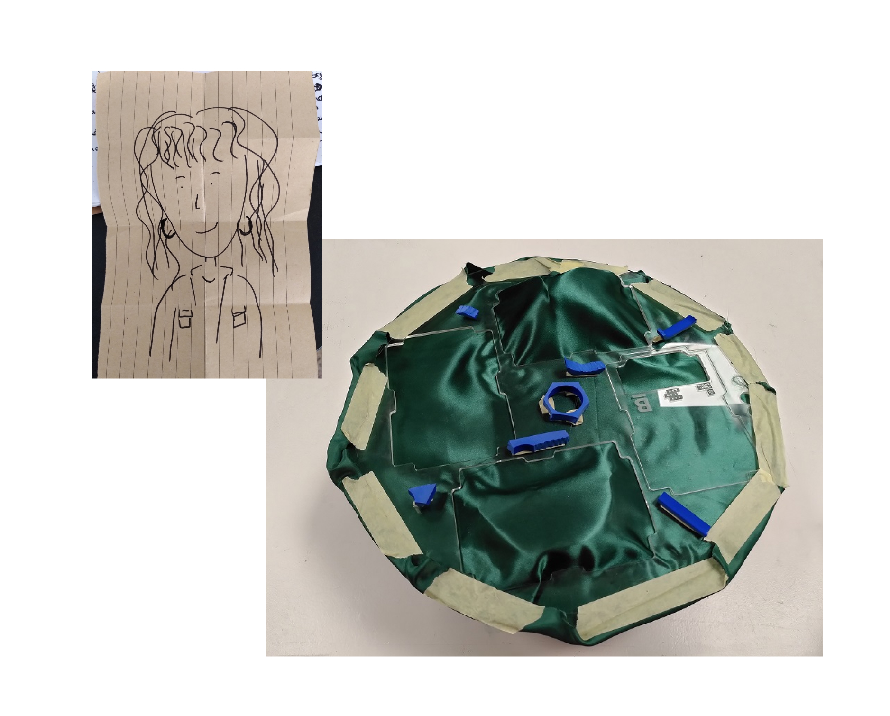
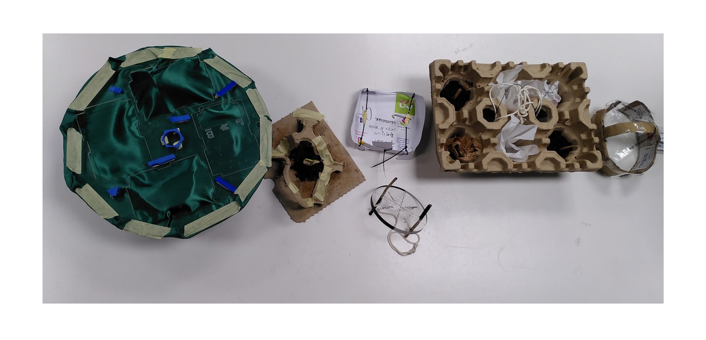

The workshop started with a one minute exercice which was to draw a self portrait. We then folded it, kept it away in our pocket and started making a magical machine that would be useful to the person on the drawing (us). We used discarted material we had found at home, in the fablab or in the street.
the space clock The machine I built looks like a clock but instead of going from "hour to hour", it helps me navigate betweek different spaces and projects. It makes it possible for me in the same "life to :
It gives me infinite time to be able to pursue these different interests, I can jump from one environment to the other, from one community to the other without having to give up on something.
The second magic thing happens when I turn the clock. If it starts turning very fast, these different spaces mix together and create a new pattern, unexpected encounters between these "worlds".
collaborative machines We shared the stories of our magic machines with our small group and found that some of them could be combined to create new possibilities : a magical physical space where anything could happen, a machine that invites people in (they could enter the way they want, not necessarily by the door / expected way) and enables sharing (emotions, ideas, gifts...), a guidance machine that amplifies our decisions...
learnings My takeaways from this workshop is that the possibilities of our machines kept changing and evolving the whole time :


The project
A few years back, I have been volunteering to provide emergency help to the homeless population and I have always been annoyed by the bad quality of the food we were distributing (instant noodles, instant coffee,...). More recently I have done some research (field + theoretical) about inclusivity of public spaces and was also part of a community supported agriculture group and started to work on food accessibility.
In this context, in my imagination, public outdoor community kitchens open to everyone to cook their food in the street would be a great idea to :
The boundaries I set myself were: cook in a public space, outside, in a space open to everyone, free to access, without using any processed food, only vegetarian, without heating material.
During that day I prepared food and cooked in different configurations :
Involving myself allowed me to broaden, enrich the topic by showing me different aspects I didn’t anticipate.
Impact on my way of working and future work
I appreciated this exercise a lot because it forced me to take a first step in an idea I had for a while but I had never acted on it or started any design intervention because I guess I didn’t know where to start or who to involve.
Exploring this idea from a first person perspective and doing this auto-ethnographic design intervention in the city “clicked” in my mind, it gives the feeling of having done something, having learned something. I will definitely explore other topics this way.
Opportunities for collaboration
I feel that collaboration with the collective was necessary in my intervention. Having a group of people ready to participate was very helpful (cf 2nd part of the intervention, cooking with others in a non welcoming place in the city). Besides helping scaling our own interventions, I feel like some common topics emerged also transversal to the different mini-collectives we formed. The idea of having this “community of practice” is reassuring and after seeing the videos of others it gives new ideas of collaboration related to accessible public spaces, relations we have with nature...
Take back the street? Go to more streets, public spaces and experiment eating there to map where it is appropriate or not and see how we "hack" it to make it possible.
Give names to these anonymous spaces where we can eat, do things. Reference them on google maps. There is no reason only bars, restaurants or generally places that require you to spend money have their identity. I realized that when I tried to tell people where I was cooking for them to meet me.
Share resources with neighbors to limit our energy consumption at the scale of the building and experiment community living. For example, tell neighbors when I am going to use the oven so they can take advantage of it too. It would be great to measure the energy saving it represents. As I don't know my neighbors, a first easy step could be to invite them at home to meet and propose a challenge at the scale of the building (6 apartments) : reduce our energy consumption. Everyone could come with the energy bills so we can do a "before-after". It could be the occasion to do a sort of brainstorming to collect ideas of individual or collective actions we could take (the oven being just one example out of many possibilities).